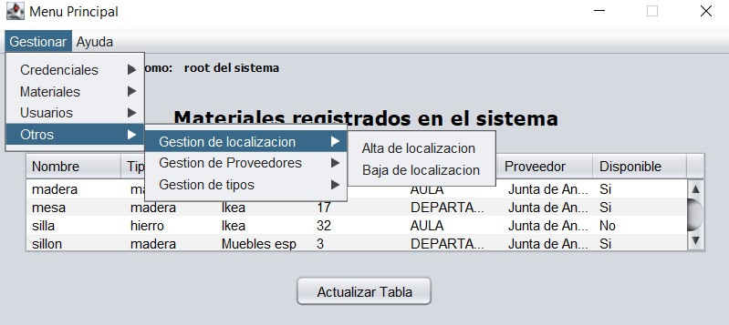

Otros
Solo los usuarios de tipo administrador poseen esta funcion, en ella el usuario podrá realizar funciones variadas, las funciones que posee son:
- Agregar, editar o dar de baja a un proveedor
- Dar de alta o baja a un tipo de material
- Dar de alta o baja a una localización para un material
Imagen del panel en cuestion
